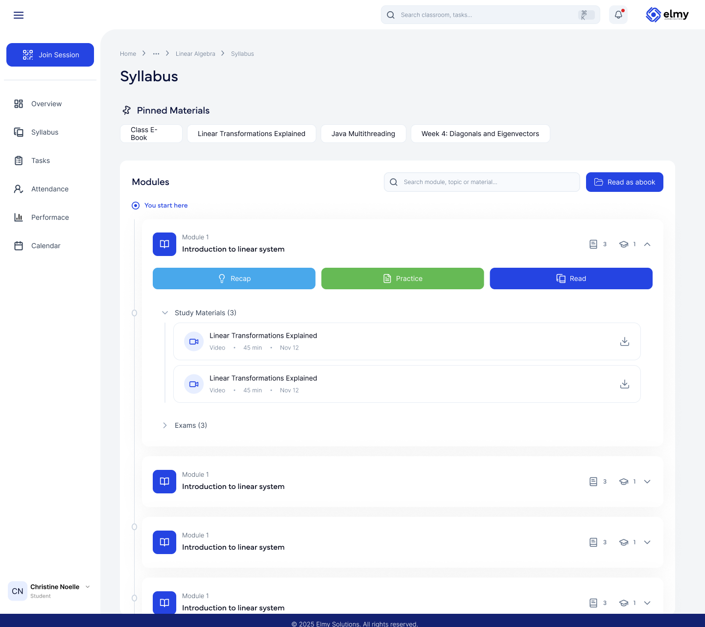

Learning administration
Organize classrooms, academic content and learner activity in one environment.

Design preview · Illustrative dataRun your academic environment
One place to organize the academic day. Create classrooms, structure courses, manage instructors and learners, share materials, schedule sessions, track attendance, send updates and follow progress.
Course and classroom creation · Private, group and examination classrooms · Interactive syllabus · Learning materials · Assignments and tasks · Calendar · Attendance · Live-session scheduling · Announcements and notifications · Instructor assignment · Student profiles · Bulk user management
Structure course activities and progression
An interactive syllabus connects lessons, materials, practice, tasks and progress into one path. Students see where they are and what's next. Educators see who is where.
Interactive syllabus · Course progression · Recaps · Practice · Reading materials · Assignments · Tasks · Progress tracking
One environment. Different perspectives.
Plan access around the work of students, educators and administrators. Confirm the roles and permissions required for your deployment.